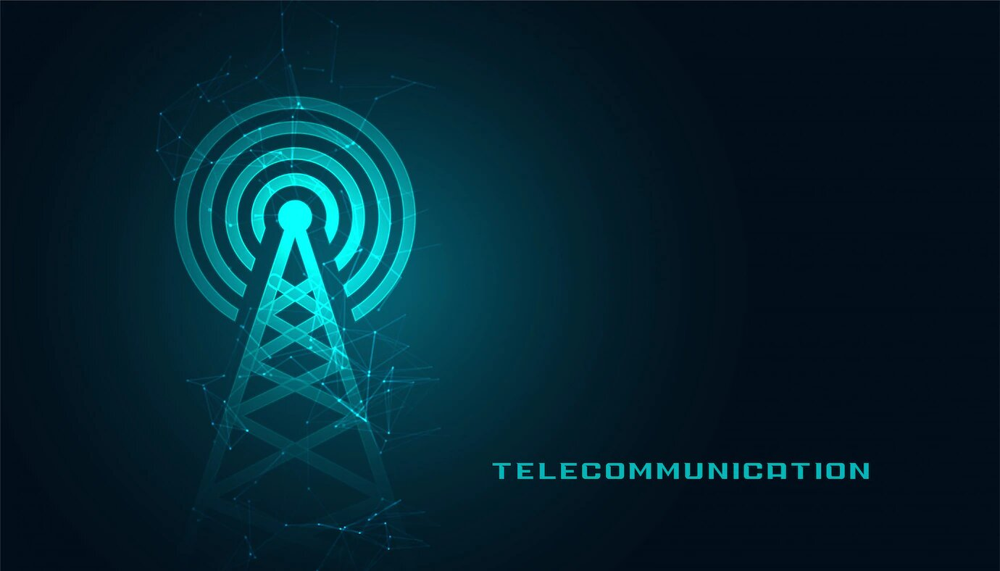
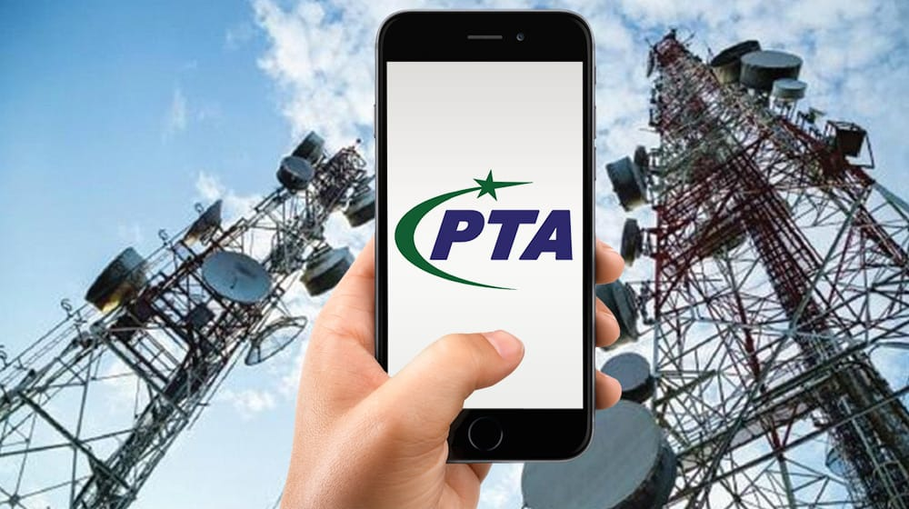

The telecommunication sector in Pakistan is regulated by the Pakistan Telecommunication Authority (PTA), which is the regulatory body responsible for overseeing and managing all telecommunication-related activities in the country. Here's some information about the government's role in the telecommunications sector in Pakistan:
The PTA is an independent regulatory authority that was established in 1996 under the Pakistan Telecommunication (Re-organization) Act. It is responsible for regulating the establishment, operation, and maintenance of telecommunication systems and services in Pakistan.
Pakistan has several major telecom operators, both public and private. The prominent ones include Pakistan Telecommunication Company Limited (PTCL), Mobilink (now part of Jazz), Telenor Pakistan, Ufone, and Zong.
The government of Pakistan periodically formulates telecom policies to promote competition, innovation, and investment in the sector. These policies aim to provide a conducive environment for the growth of the telecommunications industry.
The government, through the PTA, allocates and manages the frequency spectrum for various telecom services. This includes services like mobile telephony, broadband, and other wireless communication technologies.
The PTA is responsible for issuing licenses to telecom operators, which define the scope of services they can provide. It also regulates tariffs, quality of service, and other operational aspects.
The Universal Service Fund was established to promote the development of telecommunication services in underserved and remote areas of Pakistan. It supports projects that aim to provide basic telecom and broadband services to these areas.
The government is actively working to improve internet connectivity and expand broadband services across the country. Initiatives like the National Broadband Policy aim to increase internet penetration and improve digital access for citizens.
The government manages international gateways for voice and data traffic, ensuring seamless connectivity with the global telecommunications network.
The government, through various agencies including the PTA, is working to enhance cybersecurity measures and ensure the protection of data and privacy in the digital space.
The government is actively promoting the use of ICT (Information and Communication Technology) in various public services and governance processes, aiming to improve efficiency and transparency.
 Government of Pakistan
Government of Pakistan
 Government Services Portal
Government Services Portal